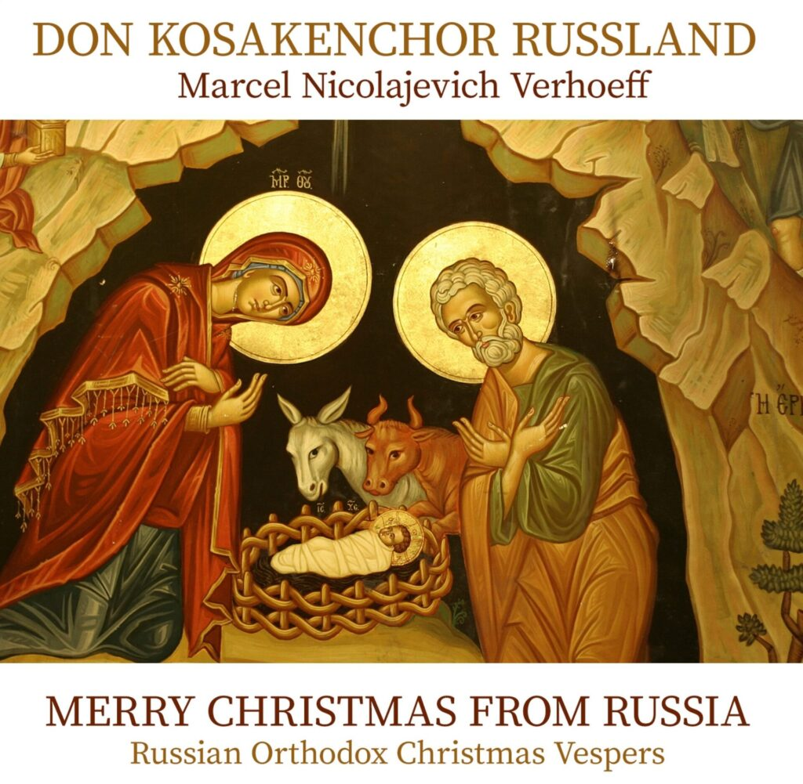

NEWS
The Musicians
.png)

Merry Christmas from Russia
Russian Orthodox Church music … … zexists today in a multitude of expressive forms and stylistic eras. It ranges from single or multivoiced choral music to concertante pieces, for example by Tchaikovsky, Grechaninov or Rachmaninoff.
Byu This CD;

Sponsors and Partners


Don Kosaken Chor Russland
In 1992, the Don KosakenChor Russland – consisting of professional singers living in Russia – was founded in its spiritual cradle, the Russian Federation. Marcel “Nicolajevich” Verhoeff was appointed chief conductor of the company in 1993. In 1999, during the first lustrum of the choir, the status of “Army Choir” was granted. The choir consists of 24 vocalists. Many of them are affiliated with one of the famous Russian Opera houses and work with great conviction and energy with their chief conductor Marcel N. Verhoeff. The choir’s management attaches great value to creating new opportunities for young talent. Auditions are held annually in Moscow. The young singers are trained and then take place in the official choir. The rehearsals take place in the Zueva Theater in the center of Moscow and are initially led by the choir’s rehearsal director, Kyrill Krayushkin, who takes care of the rehearsal of the new repertoire. After that chief conductor Marcel N. Verhoeff will work on balance, colour and interpretation. The choir has already had many high peaks. They performed twice for the Administration of the President of the Russian Federation in the White House in Moscow. The choir also gave major concerts in various countries such as Turkey, Israel, the Netherlands (including Concertgebouw & Hermitage in Amsterdam), Germany (including Michealiskirche in Hamburg, NDR-Grosser Sendersaal in Hanover and at the Russian Consulate in Bonn) Belgium (including Royal Theater in Bruges), France and Slovenia. Don KosakenChor Russland is now a welcome guest on the national and international concert stagesRussian Instruments
The history of typically Russian instruments goes way back. The famous ballad singer Boyan sang his songs accompanied by a Psalter. The Psalter is the oldest Russian instrument. It’s like a cross between a harp and a zither and its shape is reminiscent of a bird’s wing. The Gusli, a type that was developed later, more closely resembles a small table. The Gusli is still used a lot today.History of the Cossacks
The Cossacks are descendant from Russian farmers and steppe dwellers, who fled to the south east of the empire in the early middle ages, to live there in freedom. Among those who fled were peasants, serfs, impoverished nobles, and many other groups of people that clung to the fringes of society. The name Cossack comes from the Turkish word “quzzaq”, which means adventurer or free man. The Cossacks living in the Don delta formed the single largest group.